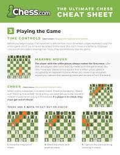

Playing chess involves a two-player strategic battle on a checkered board where each player controls 16 pieces—king, queen, rooks, bishops, knights, and pawns—with the objective of checkmating the opponent's king. Players take turns moving one piece at a time according to specific rules for how each type of piece moves, capturing opponent's pieces to gain an advantage. The game is known for improving decision-making, concentration, and strategic thinking, as it requires patience and the ability to plan ahead and consider long-term consequences.
